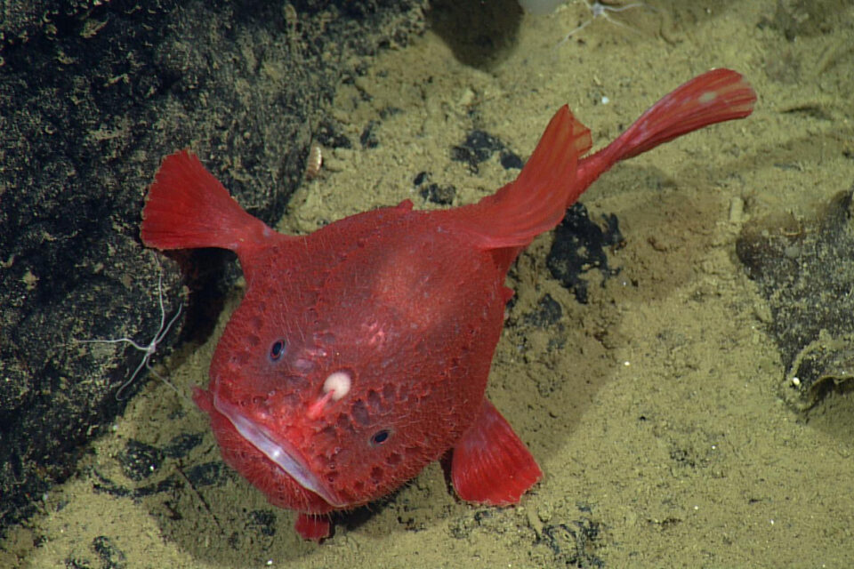
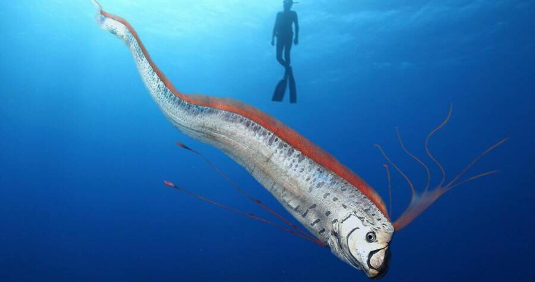
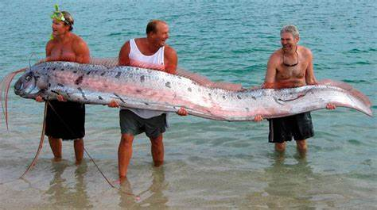
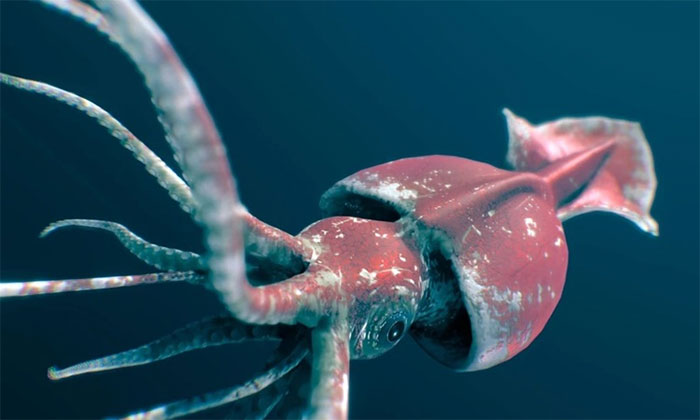
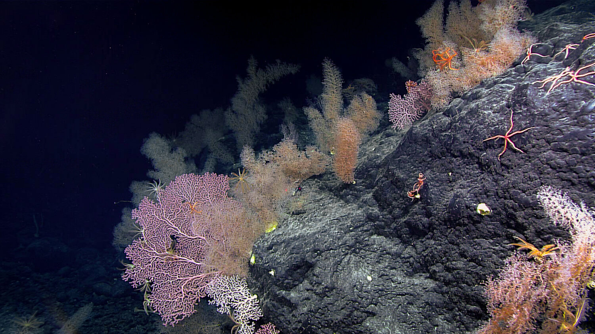
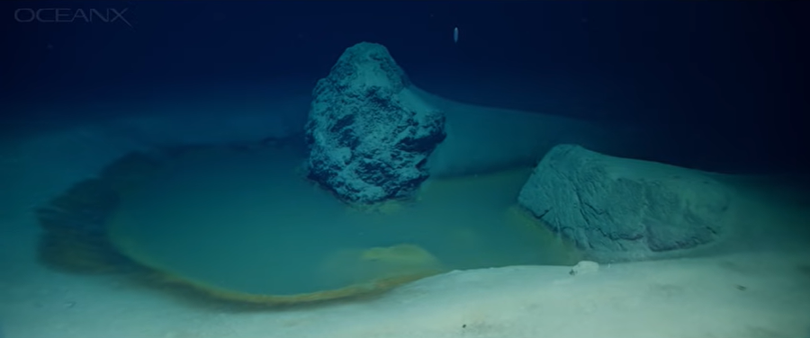
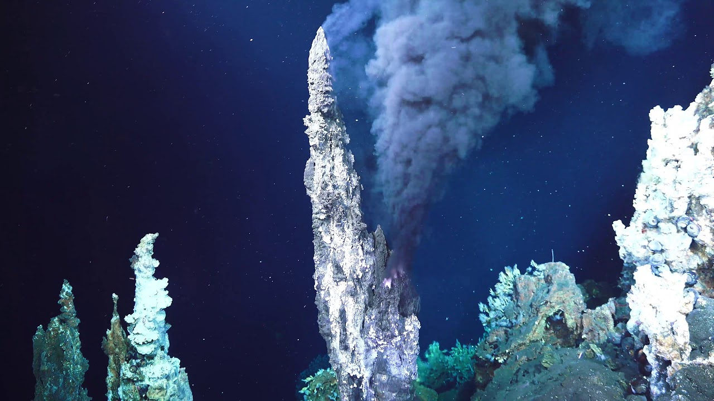
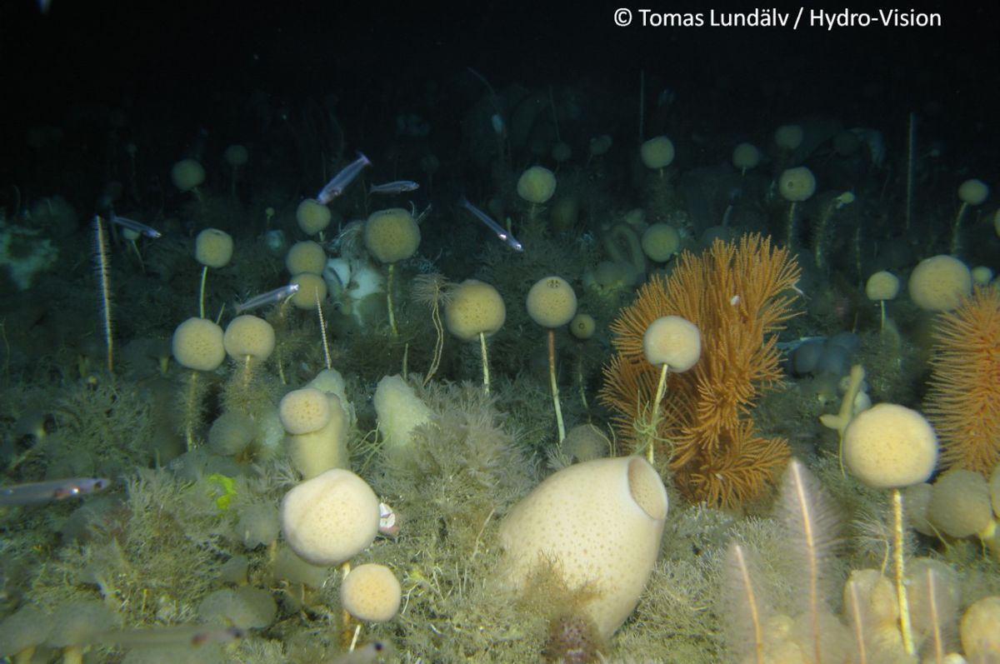
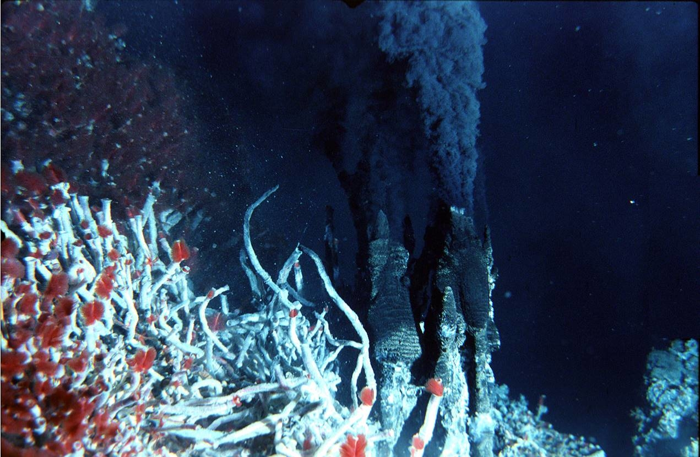
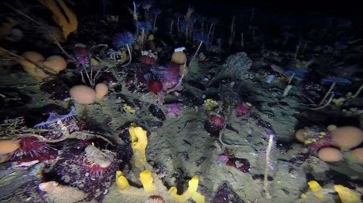

Les êtres des ténèbres
De Batoul Fakih


TP2 -Automne 2024
Techniques d'intégration multimédia
Collège de Maisonneuve
Le Poisson Pêcheur
Le poisson pêcheur est un poisson très connu par les gens.Leur nom provient de la façon dont il chasse leur proie.Ces poissons possède une entenne où le bout représente l'appât.Cet appât est remplis de bactéries symbiotiques, ce qui le permet de créer de la Bioluminescence.Les femelles sont aussi 60 fois plus grande que leur mâle
La grande majorité des personnes pense que le poisson pêcheur n'est qu'un seul poisson de couleur brun et bleu.Alors qu'il existe une grande variété que celle qu'on connaît tous.L'une d'entre elles est le Chaunacops coloratus.
Le Regalecides
Le régicides, aussi connus par le nom "poisson ruban" est le plus long poisson osseux encore vivant aujourd'hui.À cause de son apparemment, plusieurs historiens pensent que la grande majorité des les histoires des serpents de mer proviennent de ce poisson.
Le Calmar Colossal
Le calmar colossal est un être très difficile à documenter.Très peu De photo ou de vidéo ont été trouvées.Cela est dû à leur habitat qui Est dans les profondeurs glaciaires de l'Antartique.
La différence entre un calmar géant et un calmar colossal
Le calmar géant,qui est beaucoup plus commun,a des bras buccaux plus grande que leur manteau.Mais le calmar colossal a des petits bras buccaux et des énormes tentacules.
Les anges des mers
Les anges de mer se trouvent dans toutes les profondeurs des océans.Elle fait partie de la famille des Gastéropodes, comme les limaces et les escargots.Ils ont vécu depuis 400 millions d'années.Malgré leur nom très angélique, ces limaces sont des prédateur spécialisé contre les papillons de mer.
Comparaison entre l'homme et ces êtres marins
| êtres | Taille | Poids | Pression surportable sous l'eau |
|---|---|---|---|
| L'homme | 1.72 m | 62 kg | 40 m |
| ange de mer | 3 à 5 cm | 0.18 g | 20 m |
| poisson pecheur | 1 m | 0.44 g à 70 kg | 914,4 m |
| regalecides | 9 m | 300 kg | 250 à 1000 m |
| Calmar colossal | 14 m | 495 à 750 kg | 2000 m |
L'écosystème des profondeurs
Nous pensons que ces océans ténébreux sont vides de végétation.Alors qu'elle est aussi riche de vie que toute autre mer!
    
Pourquoi sont-il si géant?
Cette vidéo vous présentera l'effet du gigantisme et de l'environnement que ces animaux marins habitent.